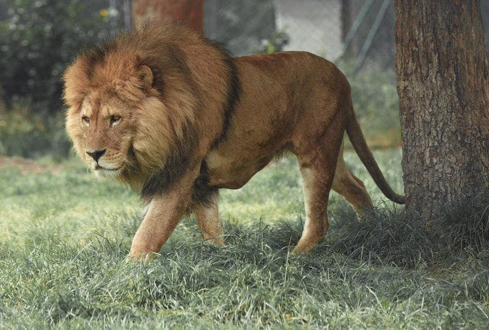

Big Cats
Big cats are a group of large, powerful felines known for their strength, agility, and hunting prowess. They include lions, tigers, leopards, jaguars, cheetahs, and more. These magnificent creatures are found in various habitats across the world, from savannas and forests to mountains and wetlands.
Lions are majestic predators known for their powerful roars and iconic manes. They live in social groups called prides, primarily inhabiting African savannas.
Lynx are medium-sized wild cats known for the characteristic tufts of black hair on the tips of their ears and their short, bobbed tails. Found in the high-altitude forests of North America, Europe, and Asia, their appearance varies with the climate; lynx in colder, northern regions have thick, light-colored fur and large, padded paws that act like snowshoes, while those in warmer southern climates have shorter, darker coats and smaller paws.
Tigers, the largest members of the cat family, are renowned for their distinctive striped coat and formidable hunting skill. They are solitary, territorial predators, native to parts of Asia from the Siberian tundra to the Sundarbans mangrove forest.
Leopards are powerful, elusive big cats recognized for their rosette- spotted coats and incredible agility. They are solitary hunters that climb trees with ease and are found across sub-Saharan Africa and parts of Asia, adapting to forests, grasslands, and even mountainous terrain.
Jaguars are the largest cats in the Americas, instantly recognizable by their dark rosettes with central spots. They are powerful swimmers and apex predators, roaming rainforests and wetlands from Mexico to northern Argentina.
Cheetahs are the fastest land animals, capable of reaching speeds up to 70 mph. They are slender, with a long tail and spotted coat, and are primarily found in the savannas and grasslands of Africa.
Servals are medium-sized African wild cats known for their distinctive long legs, large ears, and spotted golden coat. These elegant hunters are specially adapted for catching prey in tall grass, using their exceptional hearing and ability to leap up to 3 meters high. Found primarily in sub-Saharan Africa, servals prefer areas with good cover and proximity to water, where they hunt primarily rodents and birds.
Cougars, also known as mountain lions or panthers, are large solitary felines native to the Americas. They exhibit a tawny coat and a long tail, and are renowned for their strength and stealth. Cougars roam diverse habitats, from forests and deserts to mountains, and are apex predators with a highly specialized hunting strategy that relies on ambush and speed.
Bobcats are adaptable predators found throughout North America. They are named for their short, bobbed tail. Their coat can be various shades of buff and brown with spots and stripes that act as camouflage. Bobcats are skilled hunters, stalking their prey before ambushing it with a short chase or pounce.
Snow leopards are elusive big cats native to the mountain ranges of Central and South Asia. They have thick fur, long tails, and large paws that help them navigate their cold, rugged habitat. Snow leopards are solitary hunters, primarily preying on mountain ungulates and small mammals.